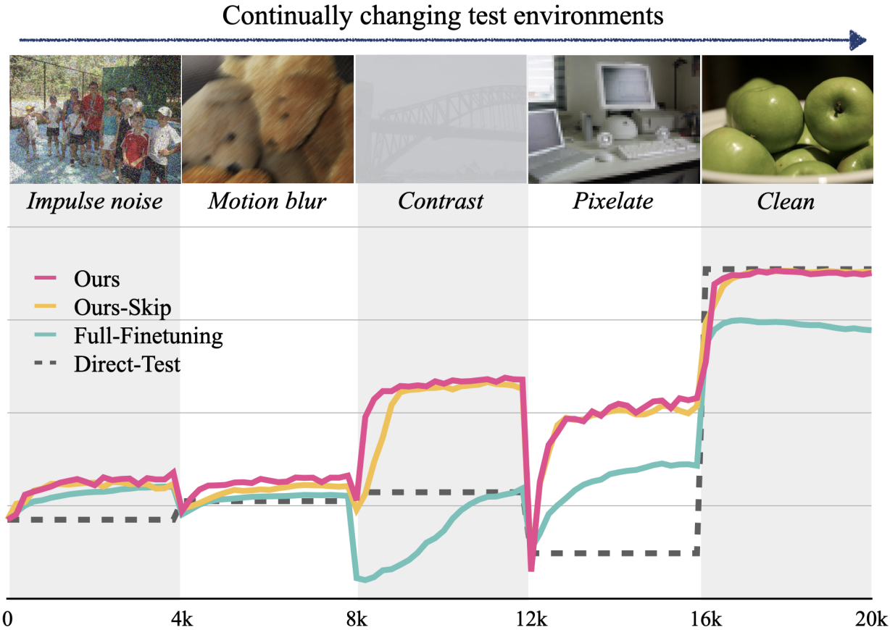

|
Jayeon Yoo I am currently a Ph.D. candidate majoring in Intelligence Information Convergence Studies at Seoul National University. I am advised by Prof. Nojun Kwak, as a member of Machine Intelligence and Pattern Analysis Lab (MIPAL). Prior to my graduate studies, I earned my Bachelor's degree in Industrial and Management Engineering from POSTECH.
|
{kind=link}
ResearchI am deeply passionate about advancing deep learning models in demanding real-world scenarios, distinct from conventional training environments. With a solid background in Unsupervised Domain Adaptation, Test-Time Adaptation, and Open-set tasks, I tackle key challenges such as data distribution variations and exploiting unlabeled data. My goal is to improve the adaptability and versatility of deep learning models, ensuring they can effectively tackle new and evolving tasks with efficiency. |
|

|
What, How, and When Should Object Detectors Update in Continually Changing Test Domains?
Jayeon Yoo, Dongkwan Lee, Inseop Chung, Donghyun Kim, Nojun Kwak, CVPR, 2024 paper / code Leveraging an adaptor module and an adaptation skipping strategy, our approach enables efficient object detector adaptation to dynamic test environments, improving detection performance, preventing catastrophic forgetting and maintaining high efficiency. |
|
|
ProxyDet: Synthesizing Proxy Novel Classes via Classwise Mixup for Open Vocabulary Object Detection
Joonhyun Jeong, Geondo Park, Hyungsik Jung, Heesu Kim, AAAI, 2024 paper Enhancing open-vocabulary object detection through the proxy of novel classes via a convex combination in the CLIP embedding space. |

|
SHOT: Suppressing the Hessian along the Optimization Trajectory for Gradient-Based Meta-Learning
JunHoo Lee, Jayeon Yoo, Nojun Kwak, NeurIPS, 2023 paper / code By hypothesizing that suppressing the Hessian enhances gradient-based meta-learning, an algorithm is introduced that improves few-shot learning performance with minimal added computational complexity, demonstrating broad applicability and efficacy. |

|
Finding Efficient Pruned Network via Refined Gradients for Pruned Weights
Jangho Kim, Jayeon Yoo, Yeji Song, KiYoon Yoo, Nojun Kwak, ACM MM, 2023 paper / code By introducing refined gradients for pruned weights, our Dynamic Collective Intelligence Learning approach significantly enhances performance and training stability in deep neural networks at high sparsity levels. |
|
|
Exploiting inter-pixel correlations in unsupervised domain adaptation for semantic segmentation
Inseop Chung, Jayeon Yoo, Nojun Kwak, WACV Workshops , 2023 paper Transferring inter-pixel correlations from source to target domain using a self-attention module, which captures domain-invariant properties, significantly improves adaptation for semantic segmentation, notably enhancing performance for rare or small-region classes. |
|
|
Unsupervised Domain Adaptation for One-stage Object Detector using Offsets to Bounding Box
Jayeon Yoo, Inseop Chung, Nojun Kwak, ECCV, 2022 paper By analyzing a unique characteristic of object detection—features distributed by both object class and regression values—we effectively adapt object detectors to the target domain, taking into account these regression values to mitigate negative transfer and improve adaptation performance. |
|
|
Learning dynamic network using a reuse gate function in semi-supervised video object segmentation
Hyojin Park, Jayeon Yoo, Seohyeong Jeong, Ganesh Venkatesh, Nojun Kwak, CVPR, 2021 paper / code Leveraging temporal information to discern frames with minimal change, a novel dynamic network is proposed for Semi-supervised Video Object Segmentation, significantly boosting inference speed with negligible accuracy loss by selectively bypassing intensive mask generation for static or slow-moving scenes across various datasets. |